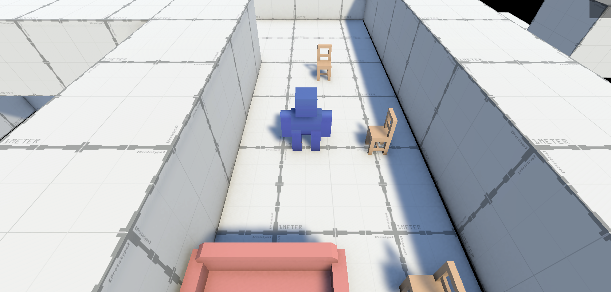
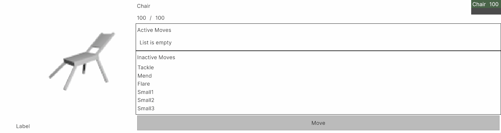

Furniture Pokemon #3.
Hey it has been awhile. Come on in, I've missed you.
I've built some greybox hallways to serve as a space for me to test the more spatial mechanics of my game. (Y'know stuff like walking and being places).
I think 'spatial' should be spelled 'spacial' instead. Space. Spac - ial.
I've created some 'spatial triggers'. These triggers perform simple actions when the player enters an area. Super useful stuff. I've got two types right now: Recruitment and Encounter. More on those later.

The Thrilling World of ✨User Interface✨
Prior to now, my code has made the assumption that the player will only have one (1) critter by their side. That simply will not do for a creature collecting game. I've programmed the concept of a 'party' and a little user interface to display it.
In this gif, I walk into two recruitment triggers, each of which adds a critter to my party. I'm not sure how recruiting critters will work in the final game but this is very helpful in testing my code.
I can use the mouse to select a member of my party and use Up Arrow and Down Arrow to change their placement in my party. The first member of the party will appear in combat should it arise. You can see this happen if you watch the upper right of the gif. Sadly I don't have a recording of my hand pressing the keys on my keyboard to complete the cinematic experience for you.

Up next is the Customization User Interface.
This screen will display all the relevant info of a critter and let the player change their setup. I want players to have fun specializing their critters to fulfill certain roles and experimenting with different combinations. Despite looking like bank software from 2002, this UI is an important step toward these goals.

A 'species' of critters will have a set of abilities available to them. Only a few can be active at once.
The next article on this game (but not the next article teehee) will be about abilities💪, passive traits🦔, combat🤼♀️, and how I've made critters into flexible little balls of code🪢. I had a lot of fun while programming so I'm excited to talk about it soon.
I'm contemplating ways to notify readers of new articles. I think an RSS feed would be super funny but I don't think RSS - in the year of our lord 2026 - has quite the market share it used to. Maybe an email list? I like my little dopey website so I don't want to move to something like substack.
If you have questions or feedback, I'm enthused to hear it. Shoot me an email at cadeanderson99@gmail.com.
Thanks for reading. Now go tell a friend that you enjoy their company.